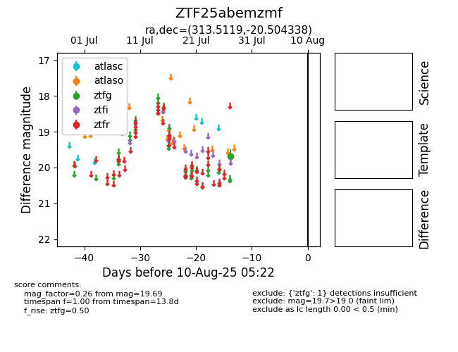

Target ZTF25abemzmf at 2025-08-06 17:45, see:
FINK: fink-portal.org/ZTF25abemzmf
Lasair: lasair-ztf.lsst.ac.uk/objects/ZTF25abemzmf
ALeRCE: alerce.online/object/ZTF25abemzmf
alt names
ZTF25abemzmf (ztf,fink)
coordinates:
equatorial (ra, dec) = (313.5119,-20.50434)
galactic (l, b) = (26.2781,-35.78297)
photometry
last ztfg=19.69
1 ztfg detections
